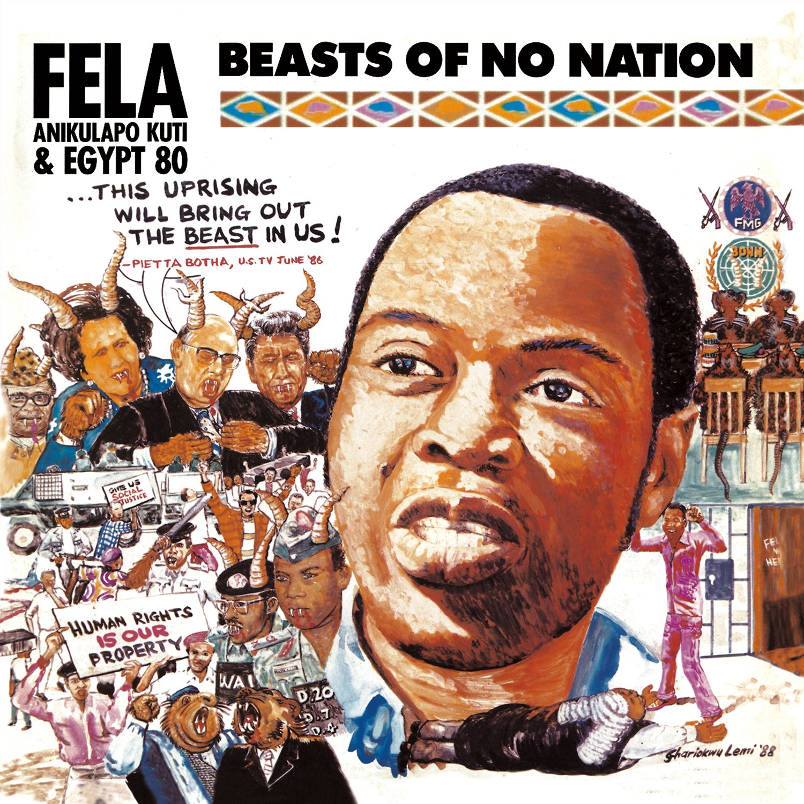

My favorite song is Beasts of no Nation by Fela Kuti. it was released in 1989 of his album of the same title Beasts of no Nation.
Here is the album art of the song
Beasts of no Nation Album Art
Here is the Lyrics of the song Beasts of no Nation
Ah, let's get now into another underground spiritual game Just go dey help me dey answer, you go dey say, "Aya kata", oh ya O feshe lu, Aya kata O feshe gban, Aya kata (2x) O feshe wan, Aya kata O feshe gben, Aya kata Aya kata Aya Koto Aya Kiti Aya Kutu O feshe lu, Aya kata O feshe gban, Aya kata (2x) Ohhhhh Basket mouth wan start to leak again oh Basket mouth wan open mouth again oh Abi you don forget say I sing ee-oh Basket mouth wan open mouth again oh I sing-i say, I go my mouth like basket ee-oh, ma lanu be apere Basket mouth wan open mouth again oh (2x) Basket mouth wan start to leak again oh Basket mouth wan open mouth again oh Fela wetin you go sing about? Dem go worry me (3x) Dem go worry me, worry me worry, worry, worry, worry Dem go worry me Dey wan to make us sing about prison Dem go worry me Dem go worry me, worry me, worry, worry all over da town Dem go worry me Dey wan to know about prison life Dem go worry me Dem go worry me, worry me, worry, worry all over da town Dem go worry me Dey wan to make us sing about prison Dem go worry me Dem go worry me, worry me, worry, worry, worry, worry, worry, worry Dem go worry me Dey wan to know about prison life Dem go worry me, worry me, worry, worry, worry, worry, worry, worry Fela, wetin you go sing about? Dem go worry me Dem go worry me, worry me, worry, worry, worry, worry Dem go worry me The time wey I dey for prison, I call am inside world The time wey I dey outside prison, I call am outside world Na craze world, no be outside world Craze world No be outside the police dey Craze world No be outside the soldier dey Craze world No be outside the court dem dey Craze world No be outside the magistrate dey Craze world No be outside the judge dem dey Craze world Na craze world be dat Craze world No be outside Buhari dey Craze world Na craze man be dat Craze world Animal in craze man skin-i Craze world Na craze world be dat Craze world No be outside Idiagbon dey Craze world Na craze man be dat Craze world Animal in craze man skin-i Craze world Na craze world be dat Craze world No be outside dem find me guilty Craze world No be outside dem jail me five years Craze world I no do nothing Craze world No be outside dem judge dey beg ee-o Craze world Na craze world be dat oh, Na craze world be dat Craze world No be outside dem kill dem students Craze world Soweto, Zaria, and Ife Craze world Na craze world be dat, ee-oh Craze world Na craze world be dat Craze world No be outside all dis dey happen Craze world Na craze world be dat, ee-oh Craze world Na craze world be dat, ee-oh Craze world Na craze world be dat, ee-oh Craze world Na craze world be dat, ee-oh Craze world Na craze world be dat, ee-oh Craze world
Make you hear this one War against indiscipline, ee-oh Na Nigerian government, ee-oh Dem dey talk ee-oh My people are useless, my people are senseless, my people are indiscipline Na Nigerian government, ee-oh Dem dey talk be dat My people are useless, my people are senseless, my people are indiscipline I never hear dat before oh Make government talk, ee-oh My people are useless, my people are senseless, my people are indiscipline Na Nigerian government, ee-oh Dem dey talk be dat Which kind talk be dat oh? Na Craze talk be dat ee-oh Na animal talk be dat oh Na animal talk be dat oh
Chorus
Many leaders as you see dem Na different disguise dem dey oh Animal in human skin Animal I put u tie oh Animal I wear agbada Animal I put u suit u (2x)These disguising leaders ee-oh, na wah for dem Dem hold meeting everywhere, dem reach America (2x) Dem call the place United Nations Hear oh another animal talk Wetin united inside United Nations? Who & who unite for United Nations? No be there Thatcher & Argentina dey No be there Reagan & Libya dey Israel versus Lebanon Iran-i-oh versus Iraq-i East West Block versus West Block East No be there dem dey oh United Nations Dis "united" United Nations One veto vote is equal to 92...or more, or more What kind sense be dat, na animal sense (2x)
Chorus
Dem go hold meeting oh, Dem go start yap human beings Animal talk don start again Dash dem human rights (2x)How animal go know say dem no born me as slave? How animal go know say slave trade don pass? And, they wan dash us human rights Animal must talk to human beings Give dem human rights I beg-I oh, make you hear me well-u well I beg-I oh, make you hear me very well Human rights na my property So therefore, you can't dash me my property Human rights na my property Dey wan dash us human rights Some people say why I dey talk like dis No be talk like dis dem take to carry me go prison ee-oh" No be me dey talk, na Prime Minister Botha dey talk ee-oh (2x) Him say, this uprising will bring out the beast in us This uprising will bring out the beast in us (3x) Ke ji keke; my argument Botha na friend to Thatcher & Reagan Botha na friend to some other leaders too And together dem wan dash us human rights Animal wan dash us human rights Animal can't dash me human rights Animal can't dash us human rights
Chorus
Beasts of no nation- Egbe Ke Gbe na bad society Beasts of no nation, Egbe Ke Gbe Beasts of no nation, eturu gbe ke